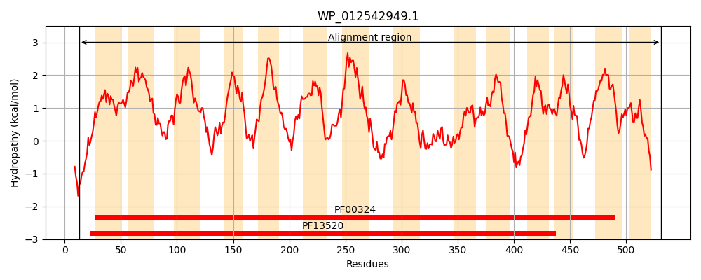
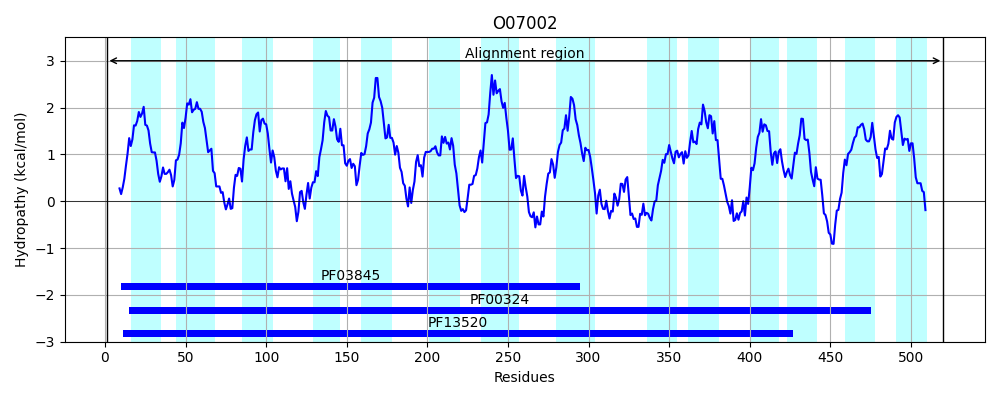
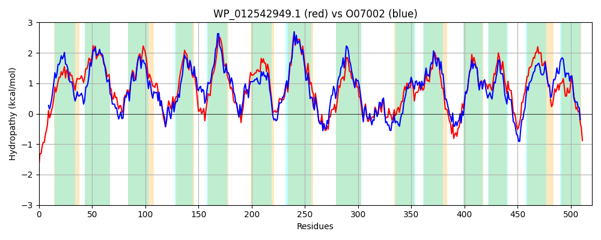

Hit Accession: O07002
Hit TCID: 2.A.3.11.1
Hit Description: gnl|BL_ORD_ID|6782 gnl|TC-DB|O07002|2.A.3.11.1 Hypothetical protein yvea - Bacillus subtilis.
Mach Len: 520
e:0.000000
Query TMS Count : 14
Hit TMS Count: 14
TMS-Overlap Score: 14.150000
Predicted Substrates:CHEBI:29987;glutamate(2-), CHEBI:29995;aspartate(2-)
BLAST Alignment:
Score: 1701 , Bit scores: 659 bits, E-value: 0.0e+00, Alignment length: 520, Percentage identity: 58
Query: 13 VAESGKFKKQLTLTDLTFIGLGAIFGSGWLFAASHVASIAGPAGIASWVIGGFAVLLLGIVYCELGAALPRAGGIIRYPVFSHGELMGYLLGFITLIAFSSLISIEIVAARQYAAAWFPALTQPGSSSPTLLGWVVQFLLLCFFFALNYYSVKTFARSNNFISVLKFLVPLLVVVTLFAFFKPENLHAQGIAPFGMSGVEAAISAGGIIFAYLGLTPIISVASEVQKPQRTIPIALILSVVLSTIIYVLLQLAFLGSIPTEMLNGGWAEVSKQFSLPYRDIAITLGMGWLAFMVISDAIISPSGTGNIYMNATPRVIYGWAKAGTFFKAFTHIDKASGIPRPALWLTFGLSIFWTLPFPSWEQLISVVSAALVLSYAIAPVTAAGLRRNAPDLPRPFRVRAFGIIGPVSFMISALIVYWSGWNTLSWLLGLQIVMFVVYVMCKGKVPEHTVSLAQQVKSSLWLIVFYALIILFSWLGSFG-GLNVIGHPWDTVLVAAMSLGIYYWGARSCLPQANFSGDE 531
+++ G F+K ++L DL IG+GAIFGS WLFA S+VAS AGP+G SW++GG +LL+G+VY ELGAALPR GGIIRYPV+SHG L+GYL+ F+T++A++SLISIE+ A RQY A WFP LT GS SPT+ GW++QF LLC FF LNY+SVKTFA++N IS+ K++VP+ +++ L F+PENL QG APFG +G++AAIS GG++FAYLGL PI+SVA EVQ P+R IPIALI+ +++STIIY +LQ+ F+G+IPTE L GW + ++FSLP++DIA+ LG+GWLA +VI DAI+SP G GNI+MN T R++Y WA+ GT F F+ ++K +G PR +LWL+F LSIFWTLPFPSW L++V S AL+LSYAIAP+++A LR NA DL RPF ++ IIGP+SF+ +A IVYWSGW T+SWLLG Q+VMF++Y+ P+ VSLAQQ+KS+ WLI FY ++++FS++GSFG GL +I +P D +LVA SL IYYW + LP+A D+
Sbjct: 1 MSKQGNFQKSMSLFDLILIGMGAIFGSAWLFAVSNVASKAGPSGAFSWILGGAIILLIGLVYAELGAALPRTGGIIRYPVYSHGHLVGYLISFVTIVAYTSLISIEVTAVRQYVAYWFPGLTIKGSDSPTISGWILQFALLCLFFLLNYWSVKTFAKANFIISIFKYIVPITIIIVLIFHFQPENLSVQGFAPFGFTGIQAAISTGGVMFAYLGLHPIVSVAGEVQNPKRNIPIALIICIIVSTIIYTVLQVTFIGAIPTETLKHGWPAIGREFSLPFKDIAVMLGLGWLATLVILDAILSPGGNGNIFMNTTSRLVYAWARNGTLFGIFSKVNKDTGTPRASLWLSFALSIFWTLPFPSWNALVNVCSVALILSYAIAPISSAALRVNAKDLNRPFYLKGMSIIGPLSFIFTAFIVYWSGWKTVSWLLGSQLVMFLIYLCFSKYTPKEDVSLAQQLKSAWWLIGFYIMMLIFSYIGSFGHGLGIISNPVDLILVAIGSLAIYYWAKYTGLPKAAIDYDK 520 | Protein Hydropathy Plots: |
|---|
|  |  |
Pairwise Alignment-Hydropathy Plot:
|
|---|
|  |